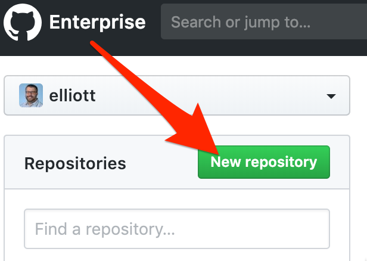
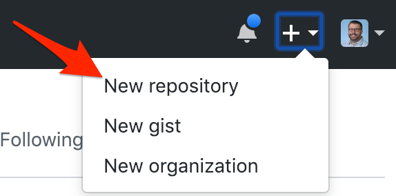

This is a step-by-step review of the process of creating a Google Cloud Function. |
|

What Technologies Are We Using?
- The Cloud Function (GCF) will be implemented in Google Cloud Platform (GCP)
- Your development environment will be the Google Cloud Shell, using the Code Editor
- The logic is written in JavaScript, packaged by Node.js
- You will also create a remote Git repository on GitHub.IU so that you can securely store and review your code even after your GCP credits have expired.
When creating a Cloud Function from scratch, you should perform each of the following steps in order.
- Create a remote Git repository on GitHub.IU
- Create a project directory within Cloud Shell, then enter it
- Initialize a new Node package
- Create and connect your local repository
- Write your code
- Deploy your code to the Cloud Function
- Test your Cloud Function
- Commit your code & update the Node package version
- Push your code to your remote repository
You will want to provide a repository in which you can store your code.
This backup allows for the following:
- You will have access to your code after your Google Cloud Platform (GCP) credits have expired.
- You can share this repository with the instructor to help troubleshoot errors.
- It's easy to feature this repository on your public GitHub profile, if you choose.
Visit GitHub.IU
In a browser on your computer, open a new tab and log into GitHub.IU.
Connect with your standard IU username and passphrase. You will not need to use two-factor authentication for this service.
Create a New Repository
Once logged in, create a new remote repository. There are a few ways to do this.
When you first log in, you can click the "New Repository" button. Other pages within GitHub have a similar button that just says "New." Both perform the same action. |  |
Alternatively, you can go to the "+" symbol in the top right of the browser window and choose the "New Repository" option. |  |
Name the Repository
Give your repository a logical name. You'll end up with many repositories, so organizing them now is a very good idea.
For this tutorial, we will use the name:
cit41200_gcf_distance_service
Review the Created Repository
The next GitHub page takes you to your empty repository and walks you through the steps to add content to it. These steps will be described in the upcoming sections of this tutorial.
It is a very good practice to keep the code for each individual Cloud Function in its own directory on your working machine. In this case, your working machine is your Cloud Shell.
Create the Directory
Navigate to the home directory for this course.
Then use the linux commands to make a directory for this Cloud Function's code and navigate into it.
mkdir distance_service && cd distance_service
Your application logic is written in JavaScript and is delivered as a Node.js package. You'll need to ensure you are using a compatible version of Node.js, install a compatible version if needed, and then create a new Node.js package.
Verify Node.js Version
GCF expects a Node.js runtime version of 12 or 16. We will use Node.js v 18.13.0 for this tutorial.
node -vIf the Node version is anything other than 18, use Node Version Manager (nvm) to install the correct version.
nvm install --ltsYou should see a message that you are currently using Node.js 18.13.0.
Initialize a new Node Package
You will now use the Node Package Manager (npm) to create a new Node.js package.
npm initProceed through the dialog to input any values you understand. If the default value (the value that appears in parenthesis) is acceptable, you can simply press Enter.
At the end of this configuration, you will have created a package.json file that contains the manifest for your Node.js package.
Create Your Code File
The package.json file contains configuration information for your Node.js package. It does not, however, contain any functional logic. By default, your logic should be stored in an index.js file.
To create this file, use the following Unix command:
touch index.jsCreate a README File
You should create a README file at the root level of your site. The contents of this file are what will display on the GitHub repository's home page.
This is a great place to make notes to yourself and collaborators: link to resources, explain different versions, etc.
To create this file, use the following Unix command:
touch README.md
At a minimum, edit the README file to add a title and a basic description of the project.
Create a .gitignore File
Create a .gitignore file to ensure that you only upload necessary files to your GitHub repository.
To create this file, use the following Unix command:
touch .gitignoreEdit your .gitignore and add the following line:
node_modulesWith your files created, you should create your local Git repository and then connect it to your two remote repositories (GitHub.IU and Google Cloud Source Repositories.)
git init
git add .
git commit -m "Initial Commit"Connect to Your Remote GitHub.IU Repository
You will add a remote nicknamed origin that will connect your local repository to your repository on GitHub.IU.
git remote add origin https://github.iu.edu/USERNAME/REPOSITORY_NAME.gitYou are now able to push code from your local repository to GitHub.IU.
From the toolbar in the Cloud Shell window, you can open the browser-based Code Editor.
This will allow you to edit your code files in a web-based text editor.
With your index.js file loaded in the editor, input the following code:
exports.convertDistance = (req, res) => {
let unit = req.body.unit || req.query.unit;
let value = req.body.value || req.query.value;
var returnValue;
if (unit == "miles") {
returnValue = milesToKM(value);
}
res.status(200).send(returnValue.toString());
}
// HELPER FUNCTIONS
const milesToKM = miles => miles * 1.60934;Although the Cloud Shell Editor saves automatically, you can choose Save from the File menu.
From the command line, issue the command to create and deploy a new Google Cloud Function. Note that the backslashes ("\") just allow a single Linux command to be wrapped over multiple lines.
gcloud functions deploy distance_service \
--entry-point convertDistance \
--runtime nodejs18 \
--trigger-http \
--allow-unauthenticatedBecause this is an HTTP-triggered cloud function, you can test it by visiting the public URL available in the Cloud Console.
- Choose Cloud Functions from the navigation
- Click the name of your cloud function ("distance_service")
- Click the Trigger tab
- Copy the Trigger URL
- Note: This cloud function expects input from the request. You will need to provide the expected values in the querystring in order to properly execute the cloud function.
- Paste the Trigger URL and a properly-formatted querystring into the browser to see the result of the function
For example, here is a sample cloud function URL with a querystring: https://us-central1-sp21-41200-elliott-demo.cloudfunctions.net/distance-service?unit=miles&value=10
Once you have made a sufficient number of changes to your code, you can make a Git commit and store your current code version.
Create a Git commit
git add .
git commit -m "YOUR MESSAGE HERE"Update the Node.JS package version
npm version minorNow you should push your code to your remote repository so that you have a backup of it. You may push to your GitHub.IU as often as you'd like to keep your backup intact.
Push to GitHub.IU
Your GitHub repository is nicknamed origin. You need to push the main branch of your local Git repository there.
git push origin main